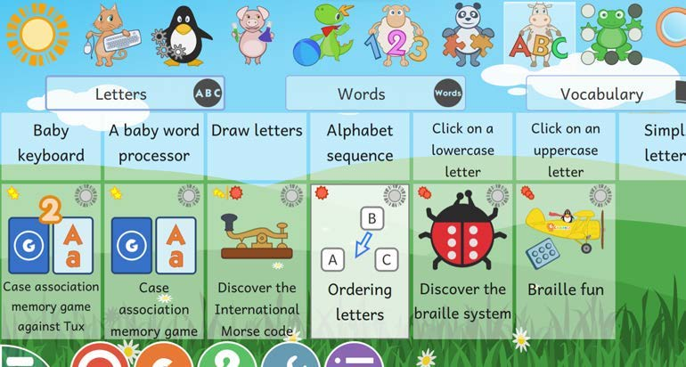
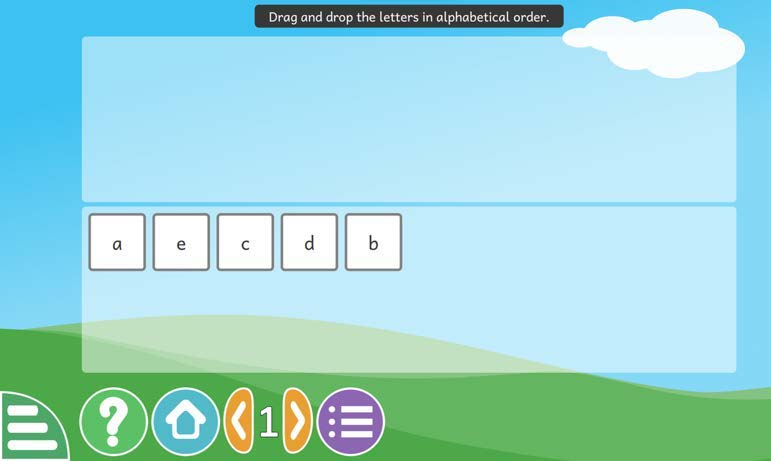

Lesson 2: Arrange letters in alphabetical order
Lesson 2
Arrange letters in alphabetical order
(i) Select an ‘Ordering letters’ option.

(ii) Arrange the letters in alphabetical order.

Lesson 2
(i) Select an ‘Ordering letters’ option.

(ii) Arrange the letters in alphabetical order.
